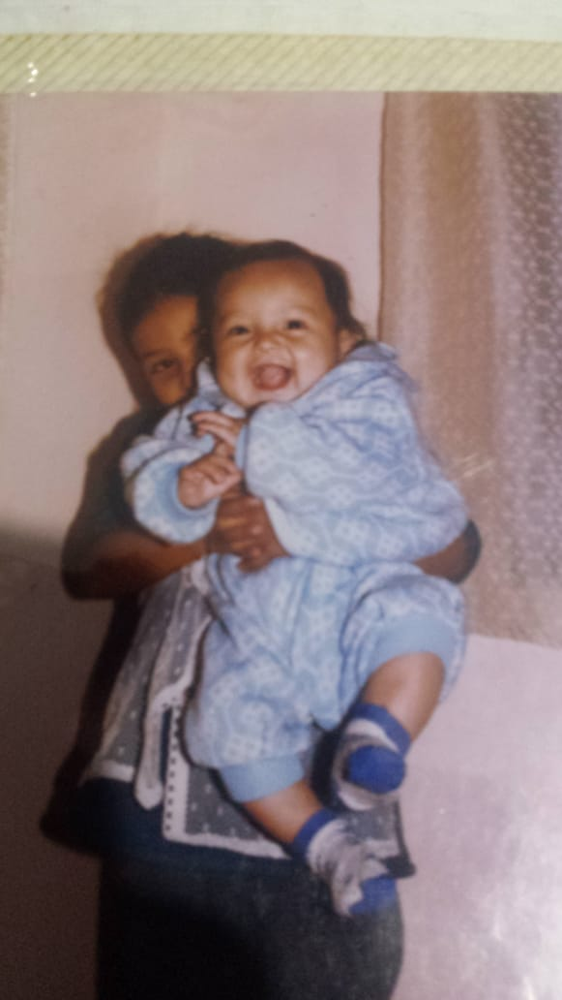
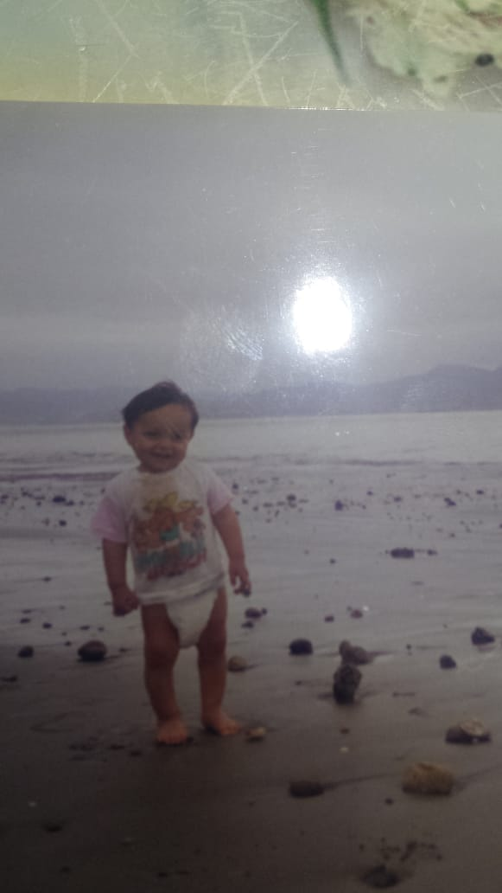
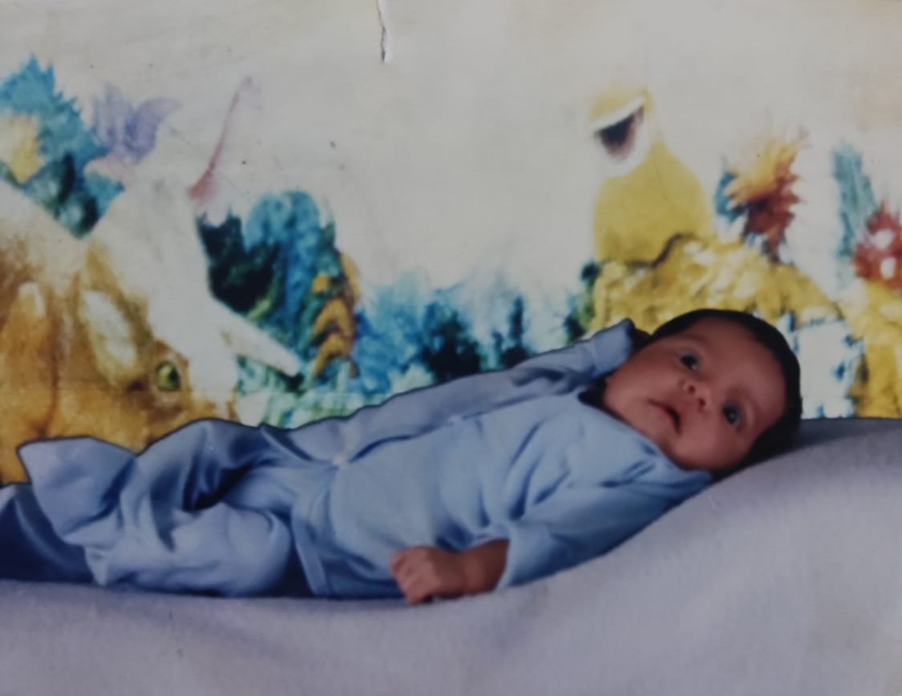

Nací en Azogues , un 04 de Agosto de 1999 , hijo de Martin Calderón y Carmelina Luna, familia conformada de cinco hermanos: Darwin, Cristian, Andrés, Paúl y Moises
  Desde pequeño fui un chico responsable y muy ordenado, a la edad de 3 años sufri un accidente con una plancha de ropa casera la cual me provoco un quemadura de segundo grado que posteriormente me dejo una marca en mi mano derecha. Con tan solo 7 años me destaque dentro de mis hermanos por el interes en los estudios y la religión, pues al acompañar a mis hermanos a sus clases de catequesis, la profesora descubrió que yo aprendia mucho y que sobre mi se podía ver las ganas de aprender mas allá de lo que usualmente propone la sociedad, es así como con tan solo 8 años culmine con mi primera comunión.
A lo largo de mi infancia pude recorer varias partes del país, y vivir experiencias únicas, tal que a los 11 años visite un zoologico en la amazonia que se centraba mucho en las serpientes, ese mismo día visite otro zoologico en el cual un tapir se escapo y tuvieron que evacuar a todos.
A los 13 años pude viajar a perú , experiencia que agradezco a mi padrino, pudiendo salir del país y conocer otras culturas.
Andrés tuvo una infancia muy significativa con grandes cambios en sus gustos y pasatiempos, los cuales hicieron de este joven un chico muy peculiar.
Para saber mas mi les dejo dos links sobre mis gustos y logros.
PASATIEMPOS Y GUSTOS ESTUDIOS Y LOGROS